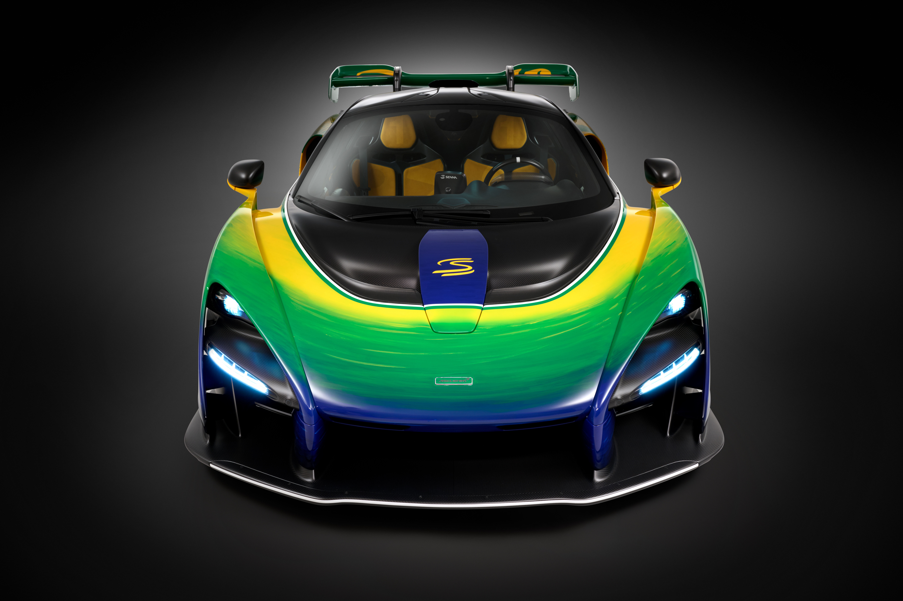

Origem da McLaren
A McLaren nasceu em 1963, fundada por Bruce McLaren, um piloto visionário da Nova Zelândia. Desde o começo, a equipe se destacou pela busca incessante por inovação e performance.
Estreando na Fórmula 1 em 1966, a McLaren conquistou sua primeira vitória em 1968. A marca logo se tornou sinônimo de velocidade, engenharia de ponta e espírito competitivo.